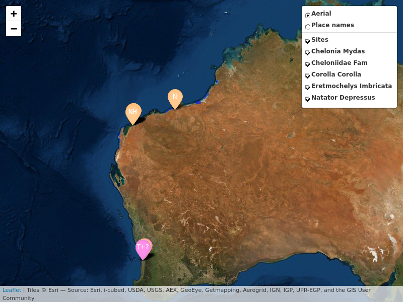
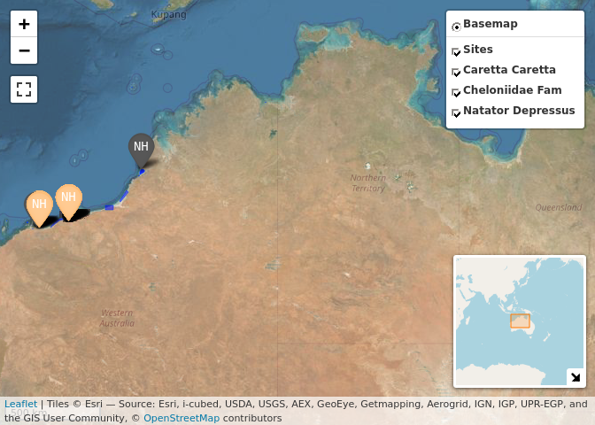

The WA Strandings Database WAStD (github) provides a RESTful API. WAStD contains data about turtle strandings, turtle taggings, turtle track and nest encounters, and some ancillary data (areas, surveys, staff). WAStD is accessible to authenticated staff of the WA Department of Biodiversity, Conservation and Attractions. The WAStD API uses token and basic authentication, see vignette on details.
The API returns spatially explicit data as GeoJSON, which can be loaded directly into any standard-compliant GIS environments, e.g. Quantum GIS.
If the data consumer however wishes to analyse data in a statistical package like R, the data need to be transformed from a nested list of lists (GeoJSON properties) into a two-dimensional tabular structure. This requires knowledge about the structure and content of the nested data from WAStD.
The main purpose of wastdr is to facilitate reading, parsing and using WAStD data by providing helpers to access the API and flatten the API outputs into a tidy dplyr::tibble.
The secondary purpose of wastdr is to centralize a collection of commonly used analyses and visualisations of turtle data. As development progresses, example analyses and visualisations will be added to the vignette. Contributions and requests are welcome!
Lastly, to facilitate collaboration with external stakeholders, wastdr contains some anonymised example data (raw GeoJSON and parsed tibble) of turtle taggings, turtle track counts, and turtle nests.
Installation
Install wastdr from GitHub. See also the top level tic.R file for other dependencies.
# install.packages("devtools")
#
# https://github.com/r-spatial/mapview/issues/312
remotes::install_github(
"r-spatial/mapview",
dependencies = TRUE,
upgrade = "always",
force = TRUE,
build_vignettes = TRUE
)
remotes::install_github(
"ropensci/ruODK",
dependencies = TRUE,
upgrade = "always",
force = TRUE,
build_vignettes = TRUE
)
remotes::install_github(
"dbca-wa/wastdr",
dependencies = TRUE,
upgrade = "always",
build_vignettes = TRUE
)While the WAStD API is only accessible to a selected audience, and wastdr is under active development, it is not feasible to release wastdr on CRAN yet. Therefore, wastdr will be distributed via GitHub for the time being.
Setup
wastdr requires to be configured with the WAStD API URL and an access token or a username / password combination. wastdr functions expect these settings to be available as environment variables. For convenience, wastdr_setup sets the correct variables, while wastdr_settings retrieves the currently set values.
DBCA staff can find their WAStD API Token at WAStD under “My Profile” and add to their .Renviron. To use ODK Central turtle data download helpers, also add ODK Central credentials.
WASTDR_API_URL="https://wastd.dbca.wa.gov.au/api/1/"
WASTDR_API_TOKEN="Token XXX"
WASTDR_VERBOSE=TRUE
ODKC_URL="https://odkcentral.dbca.wa.gov.au"
ODKC_UN="..."
ODKC_PW="..."External collaborators can use their allocated WAStD username and password:
WASTDR_API_URL="https://wastd.dbca.wa.gov.au/api/1/"
WASTDR_API_UN="..."
WASTDR_API_PW="..."
WASTDR_VERBOSE=TRUE
ODKC_URL="https://odkcentral.dbca.wa.gov.au"
ODKC_UN="..."
ODKC_PW="..."Review the settings with:
wastdr::wastdr_settings()
#> <wastdr settings>
#> WAStD URL: https://wastd.dbca.wa.gov.au
#> API URL: https://wastd.dbca.wa.gov.au/api/1/
#> API Token: see wastdr::get_wastdr_api_token()
#> API Username: FlorianM
#> API Password: see wastdr::get_wastdr_api_pw()
#> Verbose: TRUEFor other configuration methods please see the vignette “Setup”.
Get WAStD
Once set up, wastdr can load data from WAStD simply with:
tracks <- "turtle-nest-encounters" %>%
wastd_GET(max_records = 10) %>%
parse_turtle_nest_encounters()Valid endpoints are listed in the base API URL of WAStD, e.g.:
encountersanimal-encountersturtle-nest-encountersturte-nest-disturbance-observations
…or have a pickle
If you don’t have access to the WAStD API, you can still get a feel for the data by using the pickled example data:
library(wastdr)
data("wastd_data")
data("odkc_data")
wastd_data
#> <WAStD Data> accessed on 2022-04-07 17:20:31
#> Areas: 25
#> Sites: 218
#> Surveys: 1000
#> Animals (tags, incidents): 1000
#> Turtle Tags: 1000
#> Turtle Damages: 1000
#> Turtle Morphometrics: 1000
#> Turtle Nest Encounters: 1000
#> Logger Observations: 275
#> Nest Tags: 1000
#> Nest Excavations: 608
#> Hatchling Morph: 148
#> Hatchling Fans: 1000
#> Hatchling Outliers: 284
#> Light Sources: 636
#> Line Transect Encounters: 242
#> Track Tallies: 486
#> Disturbance Tallies: 115
#> Dist/Pred (nest/general): 1000
wastd_data$animals
#> # A tibble: 1,000 × 70
#> id type source source_id encounter_type status when latitude longitude
#> <int> <chr> <chr> <chr> <chr> <chr> <chr> <dbl> <dbl>
#> 1 417209 Featu… odk uuid:905… inwater new 2022… -23.2 114.
#> 2 417054 Featu… odk uuid:09e… stranding new 2022… -20.9 115.
#> 3 416954 Featu… direct 2022-02-… stranding new 2022… -34.9 118.
#> 4 416395 Featu… odk uuid:127… stranding new 2022… -21.8 114.
#> 5 416951 Featu… direct 2022-02-… stranding new 2022… -17.9 122.
#> 6 410660 Featu… paper 2022-02-… tagging curat… 2022… -21.9 114.
#> 7 416955 Featu… direct 2022-02-… stranding new 2022… -17.9 122.
#> 8 411441 Featu… wamtr… 315700 tagging new 2022… -25.8 114.
#> 9 410177 Featu… odk uuid:dd0… stranding new 2022… -21.9 114.
#> 10 409666 Featu… wamtr… 315697 tagging new 2022… -21.9 114.
#> # … with 990 more rows, and 61 more variables: crs <chr>,
#> # location_accuracy <chr>, location_accuracy_m <int>, name <chr>,
#> # leaflet_title <chr>, observer_pk <chr>, observer_username <chr>,
#> # observer_name <chr>, reporter_pk <chr>, reporter_username <chr>,
#> # reporter_name <chr>, comments <chr>, area_pk <int>, area_area_type <chr>,
#> # area_name <chr>, site_pk <int>, site_area_type <chr>, site_name <chr>,
#> # survey_id <int>, survey_area_pk <int>, survey_area_area_type <chr>, …
wastd_data$tracks
#> # A tibble: 1,000 × 65
#> id type source source_id encounter_type status when latitude longitude
#> <int> <chr> <chr> <chr> <chr> <chr> <chr> <dbl> <dbl>
#> 1 416440 Featu… odk uuid:5ea… nest new 2022… -21.8 114.
#> 2 416441 Featu… odk uuid:82d… nest new 2022… -21.8 114.
#> 3 416442 Featu… odk uuid:9ec… nest new 2022… -21.8 114.
#> 4 416443 Featu… odk uuid:706… nest new 2022… -21.8 114.
#> 5 416475 Featu… odk uuid:88f… nest new 2022… -21.9 114.
#> 6 416444 Featu… odk uuid:617… nest new 2022… -21.8 114.
#> 7 416459 Featu… odk uuid:658… nest new 2022… -21.8 114.
#> 8 416445 Featu… odk uuid:408… nest new 2022… -21.8 114.
#> 9 416446 Featu… odk uuid:35c… nest new 2022… -21.8 114.
#> 10 416463 Featu… odk uuid:a4a… nest new 2022… -21.8 114.
#> # … with 990 more rows, and 56 more variables: crs <chr>,
#> # location_accuracy <chr>, location_accuracy_m <dbl>, name <chr>,
#> # leaflet_title <chr>, observer_pk <chr>, observer_username <chr>,
#> # observer_name <chr>, reporter_pk <chr>, reporter_username <chr>,
#> # reporter_name <chr>, comments <chr>, area_pk <int>, area_area_type <chr>,
#> # area_name <chr>, site_pk <int>, site_area_type <chr>, site_name <chr>,
#> # survey_id <int>, survey_area_pk <int>, survey_area_area_type <chr>, …
wastd_data$tracks %>% map_tracks(sites = wastd_data$sites)
odkc_data$tracks %>% map_tracks_odkc(sites = odkc_data$sites)
Contribute
Every contribution, constructive feedback, or suggestion is welcome!
Send us your ideas and requests as issues or submit a pull request.
Pull requests should eventually pass tests and checks (not introducing new ERRORs, WARNINGs or NOTEs apart from the “New CRAN package” NOTE):
styler:::style_pkg()
spelling::spell_check_package()
spelling::update_wordlist()
devtools::document(roclets = c("rd", "collate", "namespace", "vignette"))
devtools::build()
devtools::test()
devtools::check(force_suggests = T, args = c("--as-cran", "--timings"))
rcmdcheck::rcmdcheck()
goodpractice::goodpractice(quiet = F)
covr::codecov(token = Sys.getenv("CODECOV_TOKEN"))
usethis::use_version("patch")To enable local testing of the API as well as checking and upload of test coverage, add your CODECOV token to your .Renviron:
CODECOV_TOKEN = "my-codecov-token"The wastdr webpage is hosted on gh-pages and generated using pkgdown.